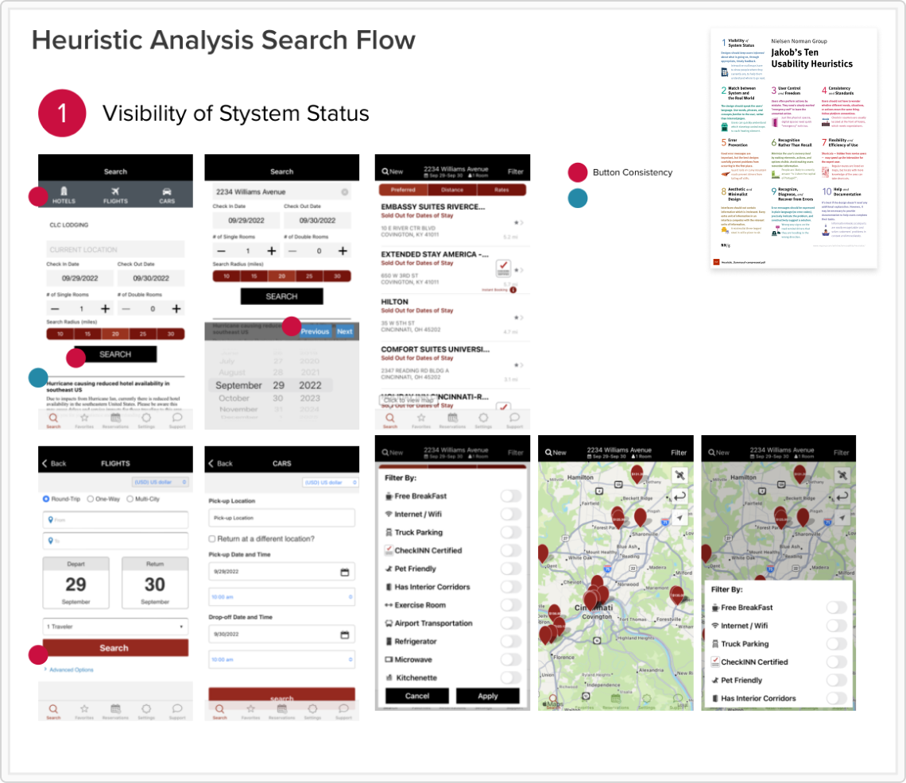

After doing this for the entirety of the app I created a PowerPoint
presentation to show to the client.
Findings. Overall the app was mostly in need of a fresh
UI with more consistency between component usage. Some key issues of note
were it was pretty poor at letting the user know what the error was, leading
to frustrations. These frustrations were clearly shown in the apps reviews.
Additionally there were components that looked like they were a button for
example, and yet it acted as a tab. However there were other UI versions
of tabs making the interaction confusing.
In addition to the heuristic analysis, I created a set of concept
mockups for the Search, Hotel Details, and Hotel Booking screens.

Concept Mockups
Competitor Analysis. I decided since I didn’t have access
to any users, I would have to rely more on my experience and the designs
of other competitor apps. I downloaded and went through a meriad of apps:
Hopper, Booking.com, Expedia, HotelTonight.
I really liked how HotelsTonight’s search UI functioned as well as
Booking.com, since they themselves had just done a redesign.
Using these apps in conjunction with my analysis findings, I quickly put
together some concept mocks, making sure to focus on spacing,
typographical hierarchy and a modern consistency.
Reaction. I presented the Analysis findings along with the
concept mockups based on those finding to the stakeholders of CLC Lodging.
Walking through the different heuristics first making sure they understood
what I was about to discuss. After spending time on the poor or failing pages,
I showed off the concepts mocks.
Talking through the different changes I was proposing I wanted to make
sure the client understood why these would be beneficial and an
improvement for their app. Showcasing the importance of visual
consistency and hierarchy, the client was receptive to my concepts and
ultimately wanted to move forward with a full redesign of the app.

I lead the discovery sessions with support from Nia-Simone. The goal
each time for me was to fully understand how that page or flow
functioned, and if there were any hidden screens that I was not aware of
due to permissions or certain criteria being met.
Development. As the lead I also was in charge of answering
any questions our development team had. They had been building the app for
CLC for some time so there was plenty of questions from them. To my knowledge
there was never an active designer on the development team so there were
a few hurdles to work through.
As mentioned our aim was not to affect too much of the current logic,
but instead update UI were we could. Some changes were pushed back on
from the development team but overall the changes were seen as an
improvement that could be completed.
Attending the SCRUM rituals became part of my tasks, walking through and
sizing stories, attending standup, and answering questions on top of
finishing out discover sessions.
Additionally I made sure to implement a design review meeting as a way
to make sure the development team was transitioning to the new
structure. Changes like spacing or typography were not adapted as
quickly as color changes for them.
Overall the team was progressing, albeit slowly. We made the decision to
add on additional developers from my company to speed up the process.
The design team was able to come in under budget which allowed for me to
spend some additional time with the development team and stakeholder,
making sure nothing was missed or inaccurately developed.